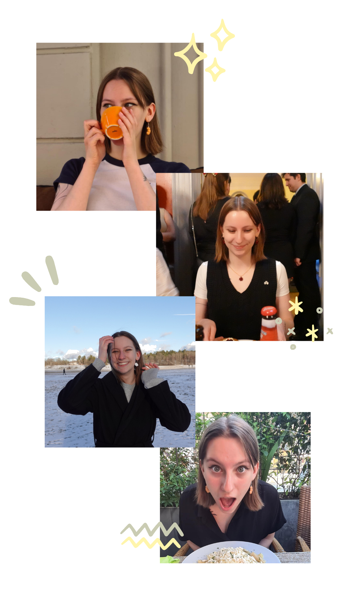

I’m a curious and ambitious communicator with experience in social media and community management. At Uppsala University I’m finishing up my bachelor’s programme in Media and Communication Studies while
Alongside my studies I’ve completed a one-year course in Digital Games & Community Management, learning a lot about the Swedish gaming industry.
I’ve worked with social media for a gamedev coworking space, student-run events, and a game project where I handled CM, content creation and marketing. I've learned how to balance creativity with structure and keep things running smoothly behind the scenes. Outside of work you can often find me at a cozy café, behind a camera, or at a game industry event!
I thrive when there’s a lot of tabs open; organizing is definitely my forte (shoutout to Notion and Trello 🙌). With experience from both non-profit projects and the gaming industry, I've learned a lot about problem solving and I'm quick to find flexible ways forward when something doesn't go as planned.
Games and internet culture are close to my heart, and in all my work I try to carry that passion with me! Community has for me been a huge part of the gaming experience, so I care about creating a positive atmosphere where everyone feels heard and ideas can flow freely. If you're looking for someone who is committed and ready to contribute something new: get in touch!

toolbox
In my social media & community management work I'm working with Discord, Instagram, Meta Business Suite, LinkedIn, Steam, Reddit, and TikTok!
I design content with Canva, and for video editing I recently started learning CapCut and DaVinci Resolve 🎬 🎨
Notion, Trello & Google Drive are my picks for productivity & project management ⭐
In my free time? I'm glad you asked!
In the summer, nothing beats cruising down the road on my longboard! Give me a sunny day and some good music, and I'm set.
My PC setup is my safe place, there's a solid chance I'm cooped up playing a cozy game on any given Saturday night.
Sweet treats. Life is too short not to get a sweet treat 🍪
(Very amateur) photography! If you catch me without my camera in my bag, something has gone terribly wrong.